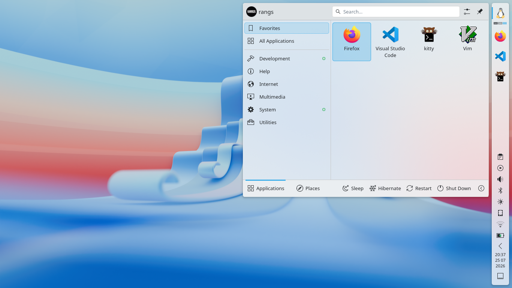
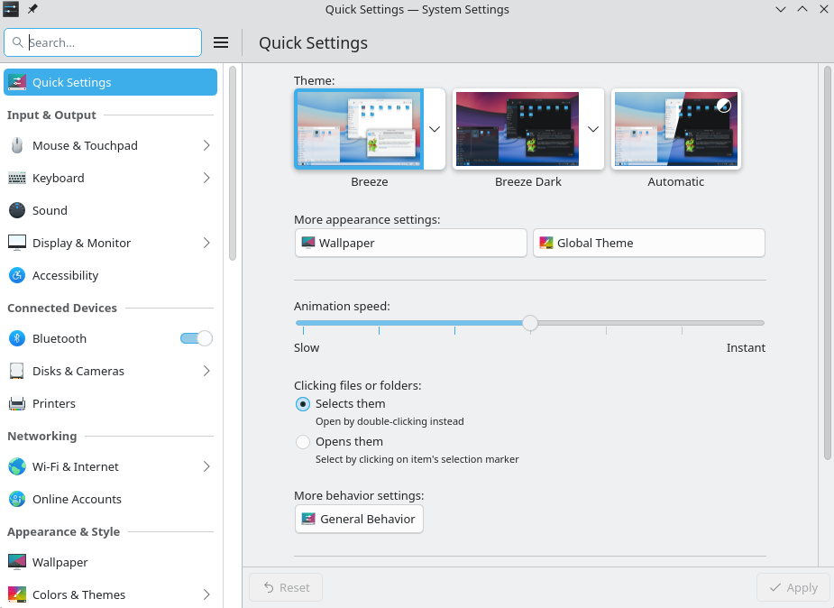
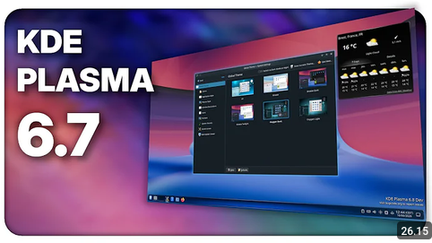

Apa itu Desktop Environment?
Desktop Environment adalah kumpulan program atau komponen antarmuka (GUI) pada sebuah sistem operasi.
The desktop problem has been solved many years ago. Try to compare Windows XP with KDE 3: nobody in their right mind would choose Windows over GNU/Linux based on the desktop experience alone.
— Matthias Ettrich, pencipta KDE
Pada artikel ini, kita akan bahas Desktop Environment yang sangat user friendly yaitu KDE Plasma.
KDE Plasma
KDE Plasma adalah shell grafis yang dikembangkan oleh komunitas KDE untuk Linux dan BSD. Ia berfungsi sebagai lapisan antarmuka antara pengguna dan sistem operasi, menyediakan antarmuka pengguna grafis (GUI) dan lingkungan ruang kerja untuk meluncurkan aplikasi, mengelola jendela, dan berinteraksi dengan file dan pengaturan sistem.
Plasma dirancang agar modular dan mudah beradaptasi, dengan berbagai varian yang disesuaikan untuk jenis perangkat tertentu, seperti Plasma Desktop untuk komputer pribadi, dan Plasma Mobile untuk ponsel pintar. Tidak hanya itu, terdapat juga Plasma Bigscreen yang diperuntukkan untuk Smart-TV.
Instalasi KDE Plasma
Untuk install KDE Plasma, itu tergantung dengan jenis distribusi yang digunakan. misalnya jika menggunakan Arch Linux tinggal masukkan perintah berikut di terminal:
sudo pacman -S plasmaAtau jika ingin di distribusi berbasis Debian, bisa masukkan perintah berikut:
sudo apt install kde-standardKetika memasukkan perintah tersebut, kde plasma akan terinstall beserta dengan dependensinya. Terutama dependensi seperti Wayland juga akan otomatis terinstall.
KDE Plasma saat Idle

KDE Plasma memiliki antarmuka yang sangat user friendly, juga sangat mudah untuk dikustomisasi. Saat pertama kali tampil biasanya akan muncul semacam welcome screen untuk pengguna baru. Meski KDE Plasma ini memiliki tampilan yang bagus, saat Idle (Komputer tidak melakukan apa-apa) hanya memakai RAM sebanyak 1.2 GB.
Jujur saja saat kugunakan cukup mengagetkan karena dengan fitur yang setara atau mungkin lebih baik dari Windows 11, KDE Plasma ini sangat ringan untuk dipakai. Sangat-sangat jarang mengalami Lag.
Setting KDE Plasma

Untuk tampilan setting KDE Plasma ini cukup standar, sangat mudah untuk dipahami bahkan bagi orang yang migrasi dari windows. Yang paling bagus dari settingan KDE Plasma adalah jika kita ingin kustomisasi tampilan sistem misalnya ubah tampilan login manager (SDDM), menunya tersedia di setting KDE Plasma dan bekerja dengan baik.
Tak hanya itu, KDE Plasma memiliki pengaturan untuk install themes kustomisasi langsung dari setting, jadi kau tidak perlu menginstall manual di internet. Cukup dengan menekan beberapa tombol di setting dan selesai, themesnya terinstall dengan mudah.
Jika mengecek lebih dalam di setting KDE Plasma, kau akan menyadari bahwa ada bagian Boot Splash Screen. Yang dimana Boot Splash Screen yang muncul di tampilan awal saat boot bisa dikustomisasi di settingan KDE Plasma. Tidak seperti kebanyakan Desktop Environment yang harus manual dengan terminal dan rawan terjadi kesalahan. Sedikit saja salah konfigurasi bisa-bisa tidak bisa boot ke Linux ataupun ke Windows. KDE Plasma sudah mengatasi hal tersebut
Kesimpulan
KDE Plasma sangat direkomendasikan untuk pengguna baru yang mulai masuk ke dunia linux, meskipun menurut komunitas KDE Plasma ini dianggap berat, menurutku dia berada di posisi desktop environment yang sedang.
Kenapa? karena hanya menggunakan 1.2GB+ RAM itu termasuk sedang bagiku. Tak seperti GNOME yang terkadang membutuhkan 1.5GB+ RAM, mungkin karena GNOME menggunakan ekstensi di internet, jadinya seperti itu.
Jika ingin pelajari lebih lanjut, bisa masuk ke website KDE Plasma Atau bisa cek video berikut:
